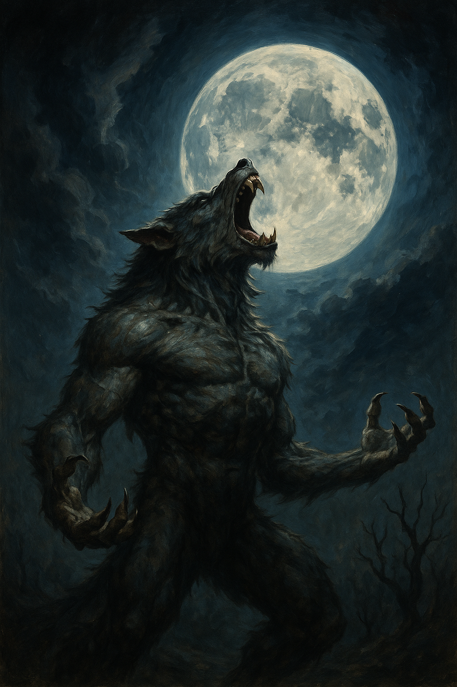
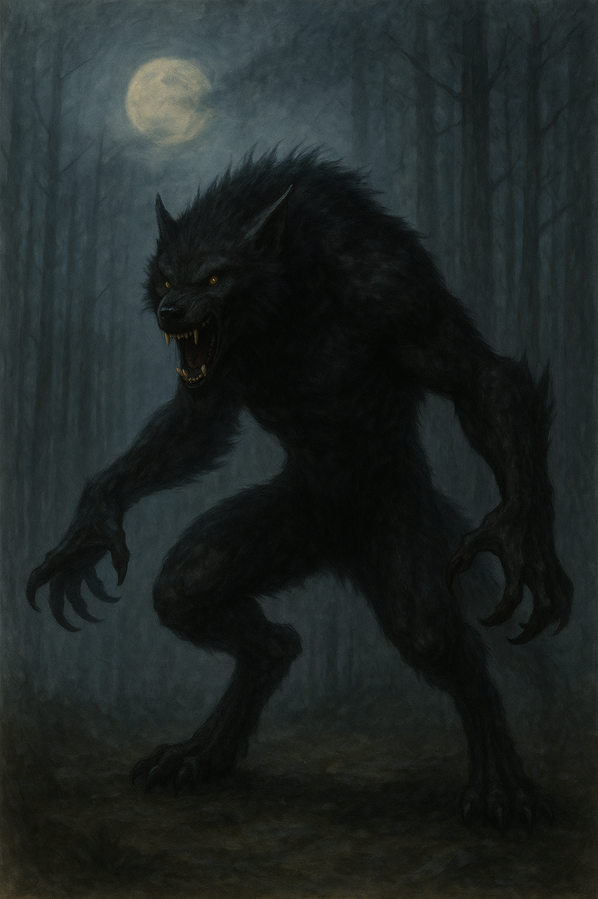
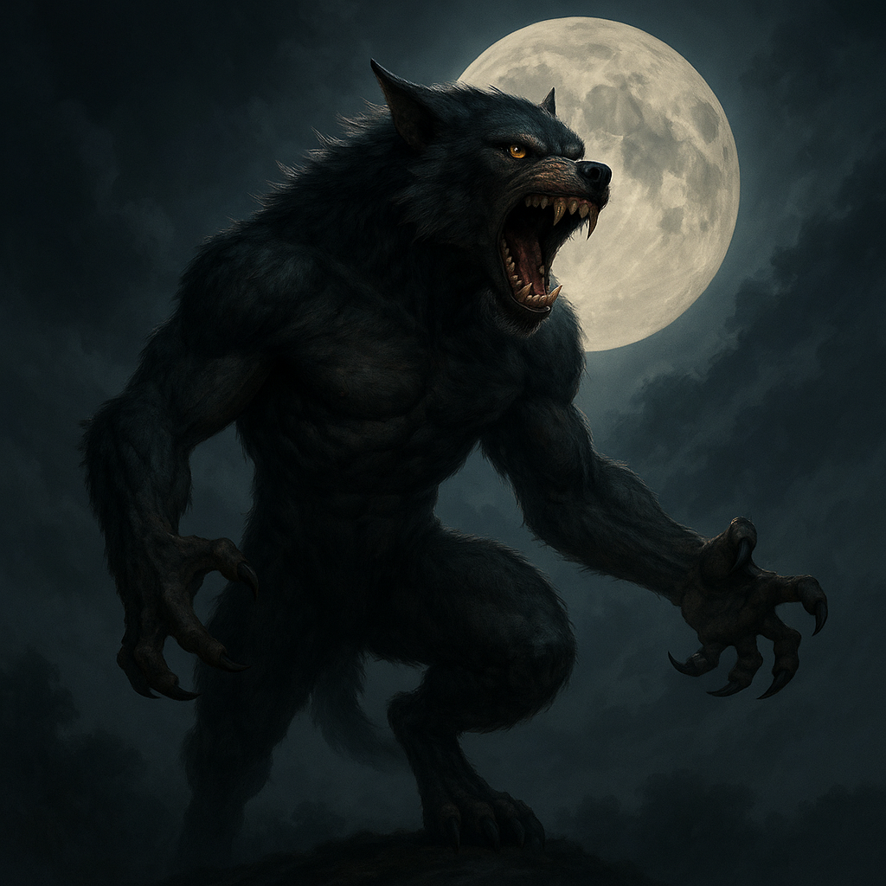

The First Howl
Long before humans walked upright and the moon had a name, the world was balanced between wild will and ordered flame. In that time, beasts and spirits spoke the same tongue, and shape was a matter of choice, not birth. But when mortals began to claim dominion, they severed that ancient connection—forgetting the voices of stone, sky, and tooth. From this breach came the Curse of the Moonborn.
The first to change was Ashaen the Huntsinger, a war-priest who slew a silver-eyed wolf sacred to the Moon Goddess, Lunara. In vengeance—or perhaps mercy—Lunara cursed him with duality: a mortal body forever haunted by the beast’s soul. At each full moon, his flesh would remember what it meant to be wild. Thus were born the werewolves—Thrice-Bound Beings whose souls stretch between man, beast, and god.
Werewolves: The Thrice-Bound
Werewolves are the cursed children of remorse and blood, their transformations bound to lunar rhythms. Each change is painful—a tearing not only of flesh but of memory and control. The werewolf curse is often inherited through bite, blood, or blasphemy, and no two lineages transform the same. Their duality makes them dangerous: too human to be free, yet too wild to be tamed. Some embrace the wolf, becoming Wardens of the Wilds, protecting sacred lands. Others resist, becoming hollowed by madness—what legends call Howlbound.
Werewolves are subject to:
- Lunacy – an overwhelming madness during full moons, especially in those who deny their beast.
- Silver’s Bite – forged from Lunara’s tears, silver wounds their very soul.
- The Lifestain – each transformation etches scars upon the spirit, shortening lifespan or driving the mind to fracture.
Lycans: The Pureblood Ascendants
Lycans are often confused with werewolves, but they are not cursed—they are evolved. They descend from ancient tribes who accepted the gift of Lunara willingly, long before it became a punishment. Where werewolves are broken by transformation, lycans were born to wear the beast. They shift at will—graceful, powerful, and terrifying.
Known as the Bloodhowl Kin, lycans follow the Way of the Moon Path, a secretive spiritual tradition that honors balance, not savagery. Their society is hidden in deep forests, tundras, and ruins, ruled by Lunar Alphas who remember when the stars still wept. They are:
- Shapeshifters by birth, not curse.
- Immune to silver, but vulnerable to sacred fire—relics of the Solar Pantheon.
- Longevity-blessed, often living several mortal centuries if not slain.
Lycans consider themselves the "True Moonborn," and many view cursed werewolves with pity—or disgust.
The War of the Second Moon
An ancient schism once split the Moonborn races: the Lycan Conclave sought to purify the werewolf bloodline, offering transformation rituals to cleanse their curse. But some saw this as genocide masked as mercy. What followed was the War of the Second Moon, a 300-year hidden war waged in frost-covered valleys and forgotten cities. The conflict ended when a rogue lycan prophet, Vael of the Hollow Tusk, shattered the original Moonstone—Lunara’s binding relic. Its fragments were scattered, and since then, neither race has been whole.
Modern Whispers
In shadowed cities and remote, isolated villages, legends still linger. Tales speak of black-furred wolves seen walking upright during lunar eclipses, their eyes glowing with unnatural intelligence. Hermits with ageless faces are said to mutter in growls, guarding ancient forest thresholds where no human dares tread. Some bloodlines trace their origins to children born beneath eclipse-darkened moons—marked by an eerie blend of empathy and primal fury. And in the most secretive circles, it is whispered that Lunara herself walks among the cursed, searching for a Moonborn soul worthy enough to restore the shattered Moonstone and decide whether the world will remain divided… or return to the unity of the wild.